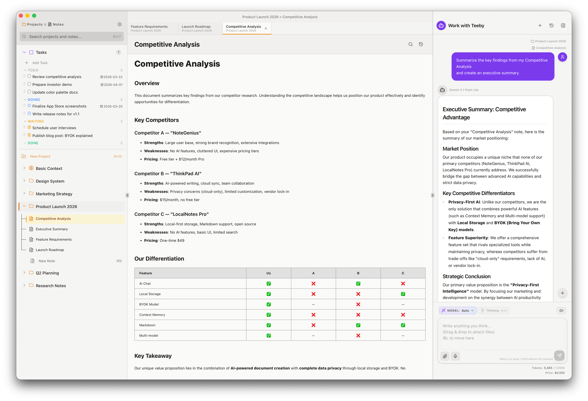

L'app di note con IA per Mac e iPad
Scrivere insieme all'IA,
il tuo quaderno personale.
Usa le note già scritte come contesto e redigi documenti professionali insieme all'IA. Le note restano sul tuo dispositivo, la chiave API resta nelle tue mani. Nessun server in mezzo.
Download gratuito · Per Mac e iPad · macOS 14 / iPadOS 17 o successivo
